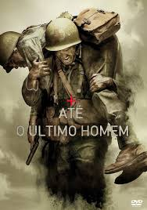

Até o Último Homem
O filme retrata a história baseada em fatos reais de Desmond Doss um bravo soldado que foi em combate na batalha de Okinawa durante a segunda guerra mundial. O curioso é que ele sequer manuseou uma arma, e mostrou sua honra pelo país ao salvar mais de 75 homens.
A história se desenvolve entorno da fé de Desmond nos seus comprometimentos com os mandamentos religiosos e como ele foi capaz de entrar em batalha sem ao menos tocar em uma arma de fogo. Abaixo uma lista do que você precisa saber sobre o filme e do que se trata:
- Fatos reais
- Drama, Guerra
- Guerra
- Fé
- Emoção
- Ensinamentos